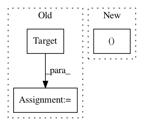

5bce73c2a8b418d5b97e445ba73418adc22802f2,tests/python/relay/test_auto_scheduler_task_extraction.py,,test_task_extraction_cuda,#,71
Before Change
assert sum(task_weights) == 2
mod, params = get_network("resnet-18")
target = tvm.target.Target("cuda")
tasks, task_weights = auto_scheduler.extract_tasks(mod["main"], params, target)
assert len(tasks) == 21
assert sum(task_weights) == 22
After Change
for layout in ["NCDHW", "NDHWC"]:
mod, params = get_network("resnet3d-18", layout=layout)
tasks, task_weights = auto_scheduler.extract_tasks(mod["main"], params, target)
assert len(tasks) == 21
assert sum(task_weights) == 22
In pattern: SUPERPATTERN
Frequency: 4
Non-data size: 3
Instances
Project Name: apache/incubator-tvm
Commit Name: 5bce73c2a8b418d5b97e445ba73418adc22802f2
Time: 2020-11-07
Author: lianminzheng@gmail.com
File Name: tests/python/relay/test_auto_scheduler_task_extraction.py
Class Name:
Method Name: test_task_extraction_cuda
Project Name: apache/incubator-tvm
Commit Name: 0bd153620044ed73600c4e245659671e0d985e90
Time: 2021-03-31
Author: xiyou@octoml.ai
File Name: python/tvm/auto_scheduler/relay_integration.py
Class Name:
Method Name: extract_tasks
Project Name: apache/incubator-tvm
Commit Name: 0bd153620044ed73600c4e245659671e0d985e90
Time: 2021-03-31
Author: xiyou@octoml.ai
File Name: python/tvm/driver/build_module.py
Class Name:
Method Name: _build_for_device
Project Name: apache/incubator-tvm
Commit Name: 0bd153620044ed73600c4e245659671e0d985e90
Time: 2021-03-31
Author: xiyou@octoml.ai
File Name: python/tvm/auto_scheduler/search_task.py
Class Name: SearchTask
Method Name: __init__